Aerin'Dar

Fight Info
Everyone should be invisible when running to the locked door. It is easy to train here. Spiders outside also see invisible. The guards outside the door will also attack people who are KoS if they are not invisible.
- Hits 327–1347 (PQDI; eqprogression estimated 1600+)
- Slowable
- Rampages
- Casts Glass Shards (375 DD on main tank, Magic Based)
- Casts Glass Roar (PBAE, Fear and 500 HP DoT, Magic Based)
- Has low HP — 300,000 (PQDI; eqprogression estimated 250K–300K)
There are untargetable golems in Aerin'Dar's Lair. These be become targetable during the fight. Have people designated to CC them. Rahlgon is mezzable and rootable, rest are immune to mez but can be rooted. Once the dragon is dead finish them off. They are trivial.
Note: It is highly recommended to pull Aerin'Dar off the platform he spawns on because it becomes a clickable fake floor that leads to Halls of Honor once Aerin'Dar is dead. Someone will inevitably click the floor causing other players to fall before they are able to get their Planar Projection Hail. The Planar Projection spawns where Aerin'Dar dies.
Once everyone has their Planar Projection Flag, the raid will want to drop down into the fake floor and clear all the mobs in the tunnel towards Halls of Honor. Click the lightning beams at the end of the tunnel to zone into Halls of Honor (see map) and complete your flag.
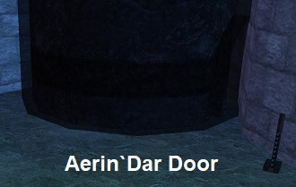

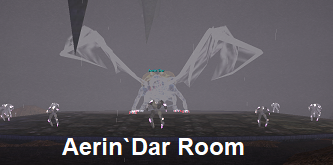
Loot
- Double-Edged Greatsword of Visions
- Honorable Longsword
- Honorary Amulet
- Ring of Nobility
- Shoulderpads of the Visionary
- Valorous Quarterstaff
- Wrath of Mithaniel
- Ethereal Parchment
- Spectral Parchment
Quarm Script
Sourced from the Quarm server Lua script (povalor/#Aerin-Dar.lua, SecretsOTheP/quests): At 85/65/45/25% HP he awakens pairs/triples of dormant adds (Mindless Minions + Rahlgon). If healed to full outside combat, resets add state; boundary check teleports him back. On death spawns a Planar Projection.
| Level | 70 |
|---|---|
| HP | 300,000 |
| Hits | 327 - 1347 |
| Resistances | MR 80 / CR 75 / FR 65 / DR 45 / PR 45 |
| Special Abilities | Summon, Enrage, Rampage, Dual Wield, Do Not Equip, Magical Attack, Unmezzable, Uncharmable, Unstunnable, Unsnarable, Unfearable, Immune to fleeing, Immune to melee except magical |
| Can Cast | Glass Roar |
| Procs | Glass Shards |
Cross-referenced from pqdi.cc (Project Quarm Database Interface)
Crystalline Globe — Key to Aerin'Dar (Plane of Valor)
To complete this quest you’ll need to be fully flagged for Plane of Valor.
There are six quest items that you should farm upfront before beginning any quest dialogue. 1-4 drop in the bottom/south section of the zone, while 5 and 6 drop from the top/north.

- Planarian Larvae’s Heart: Drops from a festering worm, a planarian larvae. These mobs can be found scattered throughout the bottom section of the zone. They are mostly around undead towers and the river shore. Rare Drop.
- Razorfiend’s Heart: Drops from razorfiends in the caves on southwestern side of the zone. Uncommon Drop.
- Piece of the Crystalline Globe (Staff Icon): Drops from a Gamite Frog along the river shore in the bottom section of the zone. Rare Drop.

- Piece of the Crystalline Globe (Gem Icon): Drops from an Undead Vassal in the undead ruin buildings on the bottom section of the zone. Rare Drop.
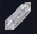
- Crystalline Spider’s Heart: Drops from A Crystalline Arachnae. These spiders are all over the North/Top area of the zone. Common drop.
- Piece of the Crystalline Globe (Orb Icon): Drops from A Luminii Crawler, a named crawler in the North/Top section of the zone. PH can be any crawler. Always Drops.
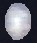
Once you have obtained all 6 items, you can move onto the dialogue and quest turn-in.
WARNING: This quests dialogue is VERY sensitive. Doing one thing wrong can cause an NPC not to respond. If you turn in the items while an NPC is unresponsive, you will lose your items and have to get them again. Follow along and you shouldn’t have any issues. If something seems off or isn’t working, relog your character and restart the dialogue from the start
Quest NPC Locations
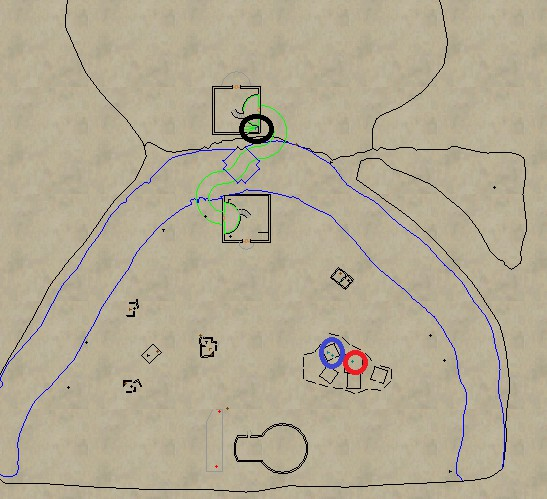
- Sergeant Johson Popoah
- Paralin Notion
- Master Sergeant Aaramis Daryln
- Captain Ryglot Cupperhide
A. Go to Sergeant Johson Popoah (loc -961, -523). He is in the tent area. Hail him TWICE. Do not respond to his text dialogue until after the second Hail.

>You say, ‘Hail, Sergeant Johson Popoah’ Sergeant Johson Popoah says ‘State your business or leave our [compound].’
>You say, ‘Hail, Sergeant Johson Popoah’ Sergeant Johson Popoah says ‘Leave now before there is bloodshed.’
>Say “compound”Sergeant Johson Popoah says ‘This is the primary command center for Che Virtuson. We fall under the leadership and guidance of Captain Ryglot. I must now ask you to leave.’
B. Speak to Paralin Notion (loc -961, -523) who is right behind Sergeant Johson Popoah
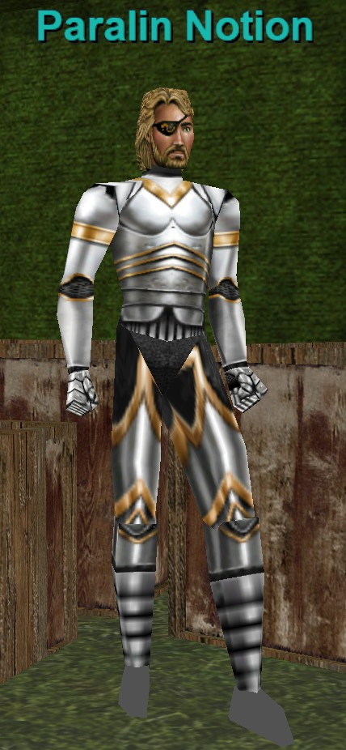
>You say, ‘Hail, Paralin Notion‘ Paralin Notion says ‘You’re either [brave], or you’re [stupid].’
>Say “brave”At this point Paralin does not always respond. This is normal
>Say “I will help your company“Paralin Notion says ‘We’re a part of the Battalion of Marr. We’re soldiers from Che Virtuson. We were dispatched to this part of the Plane of Valor to eliminate an age old target. Unfortunately, due to some recent events our mission has been placed on hold and our [squad] has been asked to remain behind.’
>Say “squad“Paralin Notion says ‘We are a part of Ducee Tapferson. Our squad is known for our bravery. We were successful in capturing this [razorfiend] earlier today. You’ve shown some bravery as well my friend and that is the reason I request your [assistance].’
>Say “razorfiend“Paralin Notion says ‘These vile beasts live in the caves west of here.’
>Say “assistance“Paralin Notion says ‘Many of us here are anxious to leave. Many wish to regroup with the rest of our company. Others wish to go back to the Halls to complete the [Trials].’
>Say “trials“Paralin Notion says ‘The Trials are overseen by the Heroes of Marr. It’s these Trials that allow us to rise in rank. Only those who have passed the trials are able to enter the Temple of Marr. Now if you wish to aid us I must ask you to do a few [things].’
>Say “things“Paralin Notion says ‘You must find the Master Sergeant and tell him that you are here to aid the cause.’
C. Go to Master Sergeant Aaramis Daryln (loc +446, -50) in the Fort. Do NOT hail him!
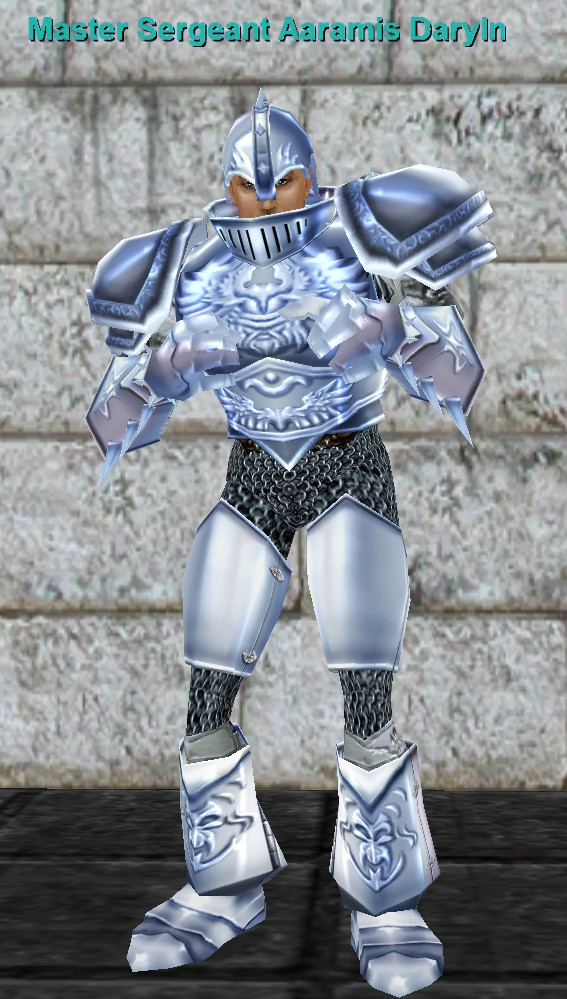
>Say “I am here to aid the cause”Master Sergeant Aaramis Daryln looks you over and says in a deep voice ‘What could you possibly do to aid our cause. Perhaps you think you can slay [Aerin'Dar] himself?’ The Master Sergeant begins to laugh uncontrollably. ‘I suggest you go back to whoever filled your head with this nonsense and stop wasting my time.’
>Say “Aerin‘Dar”Master Sergeant Aaramis Daryln says ‘I don’t have time to explain the glass dragon to you. Leave before I get angry.’
D. Go back to Paralin Notion (loc -961, -523)
>Say ‘Hail, Paralin Notion‘Paralin Notion says ‘I’m sorry the Master Sergeant was unable to help you. Perhaps you should [prove] yourselfbefore you attempt to jump ‘into the fire’ so to speak.’
>Say “prove“Paralin Notion says ‘We’ve been running into a lot of problems lately with the razorfiends and the planarian larvae. Many soldiers have been getting sick because of the infestations that they cause. Capture the hearts of a razorfiend, a crystalline spider and a planarian larvae and bring them back to me. Our squad had enough problems capturing this small razorfiend here. This will become your first so called ‘Trial’ ______. It should be enough to prove your worth.’
>Turn in the 3 hearts to Paralin Notion, Planarian Larvae’s Heart, Razorfiend’s Heart, Crystalline Spider’s Heart.Paralin Notion looks at you with surprise. ‘Very good my friend. You’ve definitely proven yourself. Find the Master Sergeant. He should be able to help you this time.’You gain experience!
E. Go back to Master Sergeant Aaramis Daryln (loc +446, -50) in the Fort.
>Say ‘Hail, Master Sergeant Aaramis Daryln’Master Sergeant Aaramis Daryln says ‘I heard what you did for Paralin Notion. That’s quite a noble feat indeed. Perhaps we can use your help. However, you’ll need to talk to the Captain first. After all, I can’t have you walking in the [glass lair] without permission.’
>Say “glass lair“Master Sergeant Aaramis Daryln says ‘It’s the prison that [Aerin'Dar] has been encased in for many generations.’
>Say “Aerin’dar”Master Sergeant Aaramis Daryln says ‘Aerin'Dar is the crystalline dragon who once roamed the Plane of Valor. During a severe rainstorm it was struck down to the very core of its being. The mighty Aerin'Dar fell from the sky and landed in what is now known as the Glassy Wasteland. Planarian larvae began to infest its body eventually turning its pure heart to evil. Our [company] was dispatched to this region of Valor to eliminate the threat.’
>Say “company”Master Sergeant Aaramis Daryln says ‘My squad of men are a part of Che Virtuson. However, we specifically are a part of Ducee Buled. We fall under the command of Captain Ryglot. Our [mission], for the time being, is simple. But we’ve run into some problems lately.’
>Say “mission”Master Sergeant Aaramis Daryln says ‘Not too fast ______. You’ll have to speak to the Captain about that. I’m not at liberty to divulge that information at this time. That information is classified. I can tell you, but then I’d have to kill you.’ Aaramis laughs. ‘Go to Captain Ryglot and he’ll be able to fill you in with all the details.’
F. Go to Captain Ryglot Cupperhide in the tents (Loc -1010, -664). >Say, ‘Hail, Captain Ryglot Cupperhide‘ Captain Ryglot Cupperhide says ‘I am very [busy] at the moment. Perhaps you should come back at another time ______.’
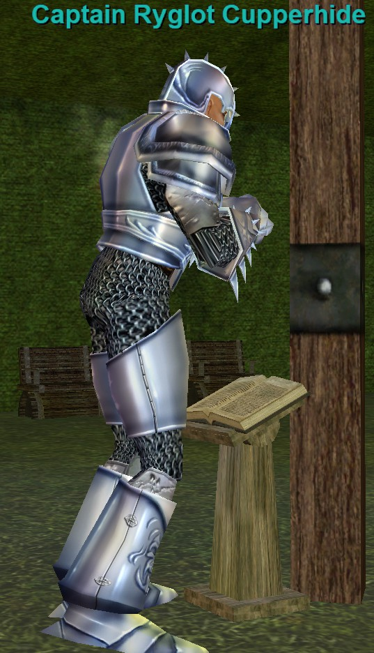
>Say “busy“Captain Ryglot Cupperhide says ‘I can’t go into any great detail, but the Crystalline Globe was taken from our command structure. It’s believed to have been separated into three pieces. Unfortunately, we’re having a lot of trouble relocating it. Perhaps you’d like to [help].’
>Say “help“Captain Ryglot Cupperhide says ‘That’s good to hear ______. I wish we had more soldiers like yourself willing to help. I’m going to need you to locate the missing pieces of the globe and bring them back to me. After you’ve acquired the pieces perhaps you’d be able to rally enough people to lend us a hand with another [mission] objective we’ve been unable to fulfill do to our diminished numbers.’
>Say “mission“Captain Ryglot Cupperhide says ‘Well, I can’t go into any details as to our main purpose is, but one of our missions was to exterminate the crystalline dragon. However, due to our company being split we are unable to go forward with this part of the operation. It has been placed on hold, pending the outcome of the [war].’
>Say “war“Captain Ryglot Cupperhide says ‘Unfortunately, that is one of the things that I’m unable to speak of at this time. However, if you are [willing] to help rally some people together I may be able to release some more information to you.’
>Say “willing“Captain Ryglot Cupperhide says ‘Well, that’s good to hear. Bring me back what I’ve requested and we’ll talk then.’
>Turn in the 3 pieces of the Globe to Captain Ryglot Cupperhide, Piece of the Crystalline Globe (Staff Icon), Piece of the Crystalline Globe (Gem Icon), Piece of the Crystalline Globe (Orb Icon) to receive your Crystalline Globe!Captain Ryglot Cupperhide looks up at you in surprise. ‘I can’t believe you brought the missing pieces back to me so quickly. I have a team of men who have been looking for these pieces for weeks now. That’s quite a feat. Unfortunately, I will be unable to make use of the Crystalline Globe at this time. A message has been dispatched to my platoon asking us to return to the Halls of Honor. It looks as if we’ll be joining up with the rest of our company fairly soon. Keep the globe. If you’re able to rally enough people together to take on Aerin'Dar then perhaps you’ll be able accomplish an objective that our platoon was unable to do. I must go now. Good luck to you ______.’
You gain experience!
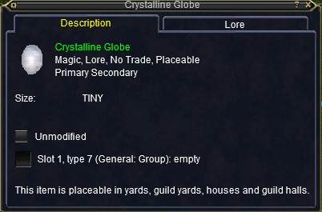
Bertoxxulous
Raid Event — Crypt of Decay
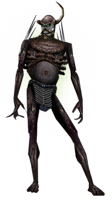
Fight Info
Bertoxxulous is the boss of an event that takes in the basement of Crypt of Decay. In order to click down into the basement you’ll need to have received the flag for completing the Carprin Deatharn event above. Once flagged, you can access the basement by clicking the chair at the zone in.
Note: Clicking the green glowing pillar in the middle of the basement will zone you out.
Note: The chair click to the basement can be buggy if recently flagged. You may get the message “You do not meet the requirements for entering Ruins of Lxanvom.” when clicking the zone-in chair just after obtaining the Carprin flag. To fix this, you can either: Drop an item on the ground and pick it up, trade a few copper to someone, zone out and back in, or relog. This should fix the issue and allow you to click the chair.
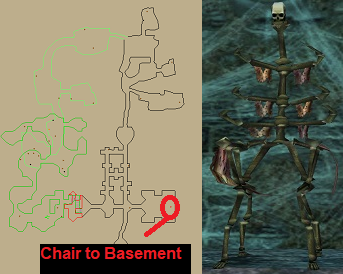
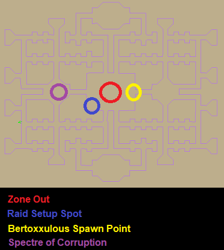
If Spectre of Corruption is spawned, then the Bertoxxulous event is up. Kill Spectre of Corruption to start the event. Typically 6 – 10 mobs will spawn per wave. Eventually some named will spawn with the waves. There are 12 named total. You’ll see this emote when each named spawns:
“An unsettling feeling of fear passes through you as you hear the summoners finish a dark incantation then cry out saying, ‘We call to you corrupted King of Lxanvom, Darwol Adan, your master has need of you!’ A bestial squeak thunders through the crypt as a foul fiend of Bertoxxulous is summoned forth.”
The last 4 all spawn together (in different tunnels). You’ll see this emote when it happens:
An unsettling feeling of fear passes through you as you hear the summoners finish a dark incantation then cry out saying, ‘We call to you the last corrupted Kings of Lxanvom. Meedo Adan! Qezzin Adan! Pzo Adan! Bhaly Adan! Your master has need of you!’ Four separate howls of rage and despair echo throughout the lower depths of the crypt as four foul fiends of Bertoxxulous are summoned forth.
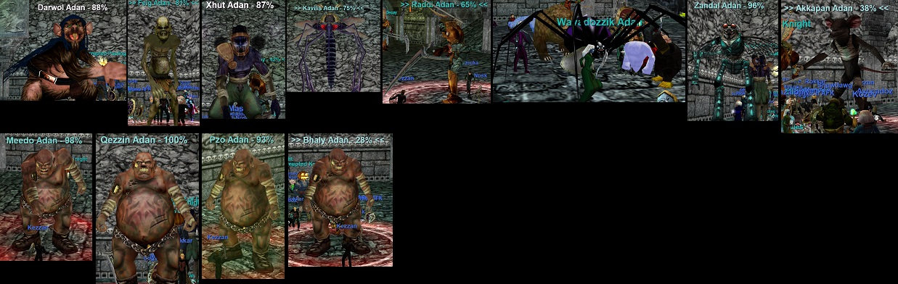
They spawn in the following order and timestamps if you kill fairly quickly. This may vary depending on your kill speed:
All are slowable.
- Spectre of Corruption (Event start)
- Darwol Adan (Minute 10)
- Feig Adan (Minute 11)
- Xhut Adan (Minute 12)
- Kavilis Adan (Minute 13)
- Raddi Adan (Minute 21)
- Wavadozzik Adan (Minute 22)
- Zandal Adan (Minute 22) – Casts an AE slow on the raid
- Akkapan Adan (Minute 22)
- Meedo Adan (Minute 29)
- Qezzin Adan (Minute 29)
- Pzo Adan (Minute 29)
- Bhaly Adan (Minute 29) – Flurries
- Bertoxxulous (Minute 35)
The waves overall are pretty easy on TLP’s. You’ll want to have your raid stay in the main room while pullers pull mobs from the hallways. Some can hit somewhat hard. The event just takes some time. Use CC/Mez when needed. Hail Planar Projection in the middle of the room when Bertoxxulous dies.
Clicking the green glowing pillar will zone you out.
- Hits 935–1600 (PQDI; eqprogression estimated 2300+)
- 1,700,000 HP (PQDI; eqprogression estimated 550K–650K MoTM)
- Slowable
- Rampages
- Casts Rot of the Plaguebringer (PBAE, 500 DD/Small Mana Drain, – 500 Disease Based and curable (72 counter))
- Immune to Disease spells, but is equally vulnerable to all other spell types
- Spawns in main room on along east wall
Loot
- Circle of Rotting Flesh
- Decayed Shoes of the Plaguebringer
- Radiant Mask of the Disease Lord
- Symbol of the Plaguebringer
- The Rotting Fist
Quarm Script
Sourced from the Quarm server Lua script (codecay/encounters/Bertox.lua, SecretsOTheP/quests): Multi-stage event — kill the Spectre of Corruption → 5 Summoners spawn + 2-hour timer; trash kills summon bosses in order (Darwol, Feig, Xhut, Kavilis Adan → Raddi, Wavadozzik, Zandal, Akkapan Adan); after the first 8 are killed, the final four (Meedo, Qezzin, Pzo, Bhaly Adan) spawn; after a total of 12 boss kills Bertoxxulous spawns. On death → victory emote + Planar Projection; spectre respawns in 66 hours.
| Level | 75 |
|---|---|
| HP | 1,700,000 |
| Hits | 935 - 1600 |
| Resistances | MR 450 / CR 375 / FR 375 / DR 360 / PR 360 |
| Special Abilities | Summon, Enrage, Rampage, Dual Wield, Do Not Equip, Unslowable, Unmezzable, Uncharmable, Unstunnable, Unsnarable, Immune to fleeing, Immune to melee except magical, Will not Aggro, Immune to lull effects, No Harm from Players |
| Can Cast | Black Plague, Rain of Bile |
Cross-referenced from pqdi.cc (Project Quarm Database Interface)
Carprin Deatharn
Raid Event — Crypt of Decay
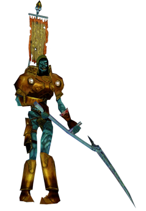
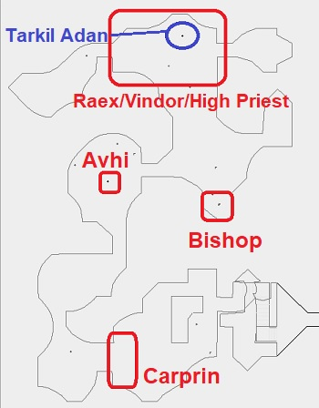
Carprin Deatharn is the trigger mob for an event that gives the flag to the Bertoxxulous area (basement) of Crypt of Decay. When aggroed, he also spawns 3 adds. Kill the guards first. When you do Carprin will respawn, then you can kill Carprin. If you ignore the adds Carprin will become HP locked, so the adds must be killed first.
- Hits 261–1221 (PQDI; eqprogression estimated 1500+ with MoTM)
- Slowable
- 160,000 HP (PQDI; eqprogression estimated approx. 150K)
- Spawns 3 adds upon Aggro
- Casts Gift of Hate (20% chance to mem blur)
- Procs Theft of Life (Single Target, 3500 Lifetap DD, – 200 Magic Based)
- Immune to Disease
Named will spawn in the following order after Carprin Deatharn is killed. Kill one named to spawn the next further in. Once all are dead Hail Tarkil Adan for your flag. He only gives out 36 flags in total.
- Avhi Escron – Permarooted – Hits 1,800+ with MoTM – Slowable
- Bishop Toluwon – Flurries – Hits 2,000+ with MoTM – Slowable
- Raex Pwodill and Vindor Mawnil – Hits 1900+ and 1400+, respectively with MoTM – Both are fought at the same time – Raex Pwodill is immune to slow – Vindor Mawnil is slowable – Tank cooldowns recommended. – Once these are killed then High Priest Ultor Szanvon will become attackable
- High Priest Ultor Szanvon – Hits 2,100+ – Slowable – Tank cooldowns recommended
- Tarkil Adan – Hail for flag to Bertoxxulous’ Lair
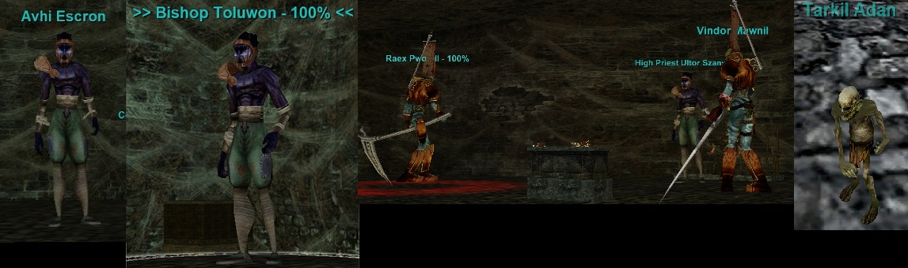
You will get a key an achievement:
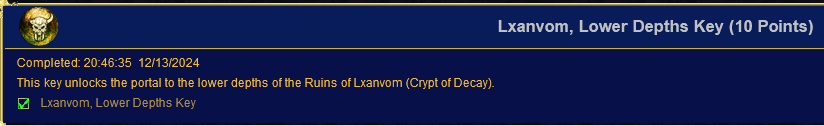
Click on the chair at the zone in to access the Bertoxxulous basement area. It can sometimes bug out and give a message that you don’t have access. You can open a trade with someone, relog, or drop and item on the ground and pick up it up to “fix” this bug and click down.
Loot
The bosses in this event drop group level loot.
Quarm Script
Sourced from the Quarm server Lua script (codecay/#_Carprin_Deatharn.lua, SecretsOTheP/quests): On combat start he summons three named adds (#Breddan_Rutyl, #Fran_Prisoal, #Abroan_Drian) with flavor text referencing Bertoxxulous. When hate drops he warps back and heals 30% (anti-Memory-Blur); periodic hate reduction.
| Level | 70 |
|---|---|
| HP | 160,000 |
| Hits | 261 - 1221 |
| Resistances | MR 80 / CR 80 / FR 80 / DR 1000 / PR 60 |
| Special Abilities | Summon, Enrage, Dual Wield, Do Not Equip, Magical Attack, Unslowable, Unmezzable, Uncharmable, Unsnarable, Unfearable, Immune to fleeing, Immune to melee except magical, Immune to lull effects, Proximity Aggro, Always Calls for Help |
| Procs | Theft of Life |
Cross-referenced from pqdi.cc (Project Quarm Database Interface)
Saryrn
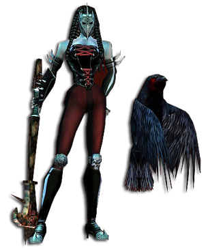
Fight Info
In order to access Saryrn’s Tower someone in your raid will need to have completed the Screaming Sphere Key Quest. This will open the door to the Tower Entrance. One key is enough for the entire raid.
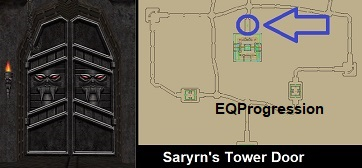
You will find four named mobs on your way up the tower. Kill these as you go.
Note: On random loot servers these can drop very good loot (Plane of Time, etc)
- Salczek the Fleshgrinder
- The Acolyte of Affliction
- Ta’Grusch the Abomination
- Maareq the Prophet
NOTE: You’ll also want to complete The Keeper of Sorrows (Tylis Newleaf) Event along the way. This event is required for PoP Flagging. This event begins in the same room that Maareq the Prophet spawns in. This is the last room before Saryrn’s chamber. A guide for the event can be found >> HERE <<.
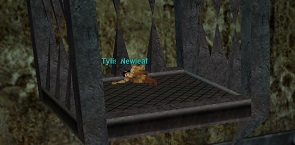
Saryrn
At the top of the tower is Saryrn. She is a fairly easy boss. She spawns adds periodically during the fight, they don’t hit very hard. Just kill them as they spawn. Also she has a pet bird Sorrowsong who flies around the room. Sorrowsong is untargetable at first, but becomes targetable later in the fight. Sorrowsong casts an PBAE silence occasionally. Each guild may do this fight differently. You can either CC or kill the adds. I’d recommend killing them off for a bit then near the end just CC them and kill Saryrn. You’ll need to kill Sorrowsong also.
- Hits 854–1853 (PQDI; eqprogression estimated approx. 700+)
- Slowable (partially)
- AE Rampages
- 1,400,000 HP (PQDI; eqprogression estimated 800K)
Hail the Planar Projection for your flag!
Loot
- Cape Embroidered with Runes
- Crowned Staff of Anguish
- Greatstaff of Misery
- Miserable Bauble
- Orb of Infinite Terror
- Twin-Blade of Sorrow
- Unadorned Cloak of Battle
- Withering Staff of Agony
- Ethereal Parchment
- Spectral Parchment
Quarm Script
Sourced from the Quarm server Lua script (potorment/Saryrn.lua, SecretsOTheP/quests): Forces Sorrowsong to spawn on engage; at 99%: Sorrowsong begins silencing + spawns 5 wolf/boarman adds; every HP threshold below that (90–30%) spawns 3 summoned servants/twisted spirits; at 25%: Sorrowsong becomes targetable and attacks. If healed to full, resets to stage 1; boundary check → teleport back + Balance of the Nameless. On death spawns a Planar Projection.
| Level | 71 |
|---|---|
| HP | 1,400,000 |
| Hits | 854 - 1853 |
| Resistances | MR 235 / CR 180 / FR 170 / DR 160 / PR 165 |
| Special Abilities | Summon, Enrage, Rampage, Dual Wield, Do Not Equip, Unslowable, Unmezzable, Uncharmable, Unstunnable, Unsnarable, Immune to fleeing, Immune to melee except magical, Immune to lull effects |
| Can Cast | Torrent of Agony, Horrifying affliction |
| Procs | Torrential Torment |
Cross-referenced from pqdi.cc (Project Quarm Database Interface)
Screaming Sphere — Saryrn Key (Plane of Torment)
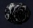
You will need to obtain 5 items from around the zone in order to be able to open the door to Saryrn’s Tower.
- Orb of Agony – Drop from The Avatar of Agony. Always Drops.
- Orb of Anguish – Drop from The Avatar of Anguish. Always Drops.
- Orb of Pain – Drop from The Avatar of Pain. Always Drops.
- Orb of Suffering – Drop from The Avatar of Suffering. Always Drops.
- Mouths of Baraguj Szuul – Drops from Baraguj Szuul after a small ring event. Always Drops.
To get the 4 orbs you’ll need to kill PH’s in different areas of the zone. See map for spawn locations.
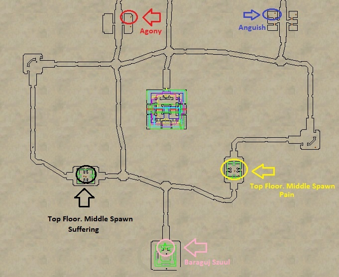
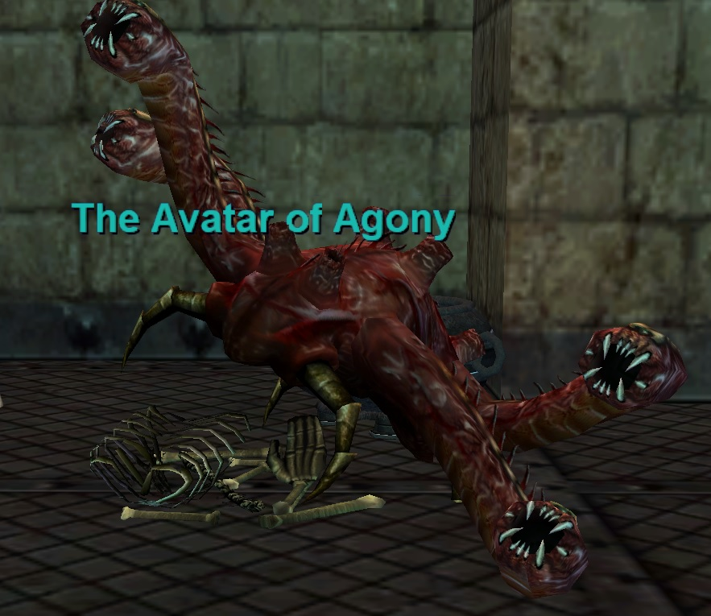
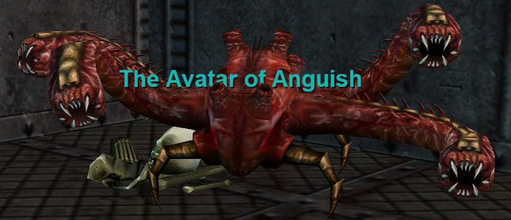
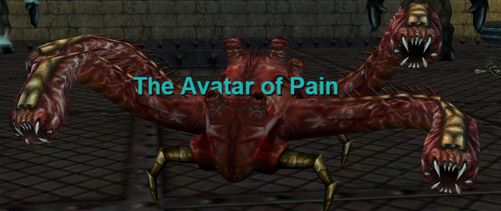
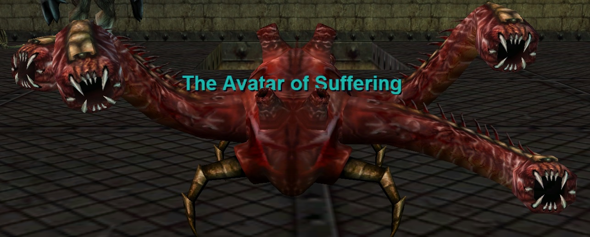
The Pink circle on the map represents where Baraguj Szuul spawns. You will want to aggro him (don’t kill) to get ported into his stomach. Kill the mobs inside and keep dropping down floors until you reach An Unimaginable Horror. There are 4 or 5 floors. Kill it to get ported back out to Baraguj Szuul. Some trash mobs may aggro when you get ported back out, so be ready.
At this point you can kill Baraguj Szuul. He is a mini raid boss, but can be 1 grouped if your group is geared. He does hit hard and having a real tank is recommended.
- Hits +1100
- Flurries
- 200K-250K HP estimate
- High resists
Kill him and loot Mouths of Baraguj Szuul. This is a 4 slot container. Put your 4x Orbs into it to receive Screaming Sphere!
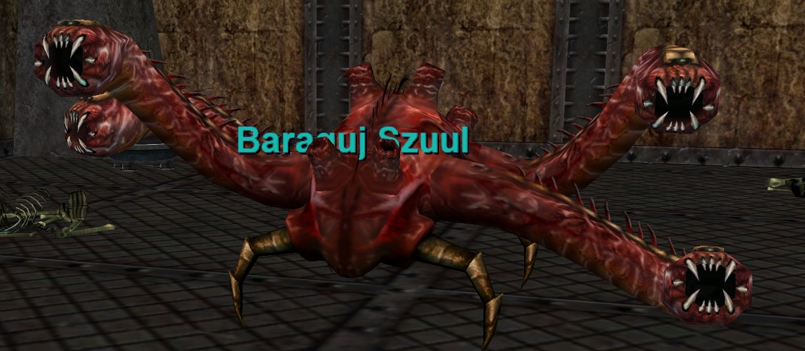
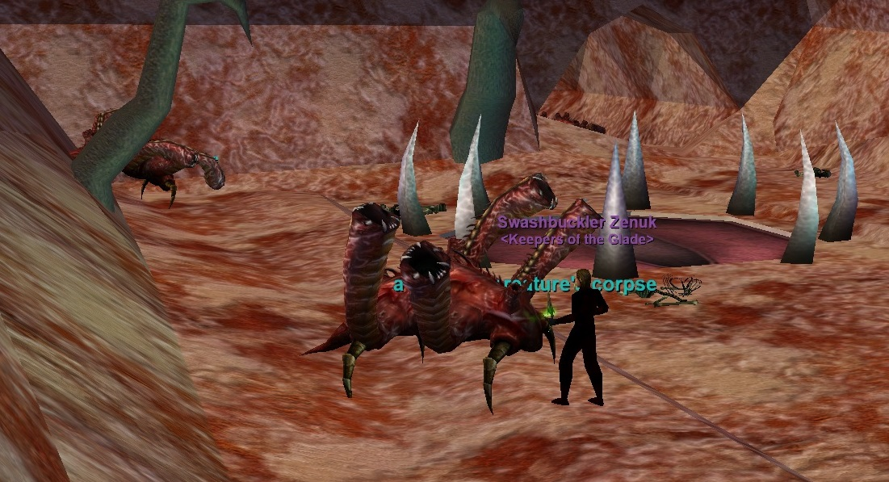
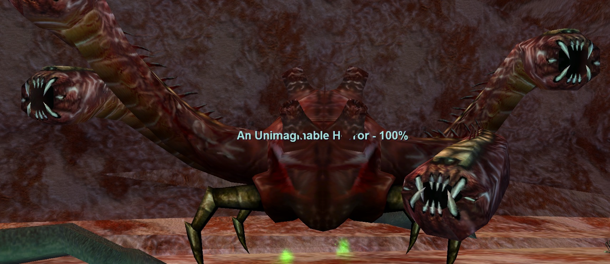
The Keeper of Sorrows
Event — Plane of Torment
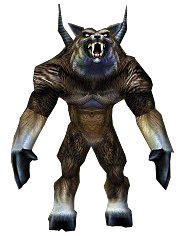
Loot
- Band of the Adorned
- Crowned Staff of Anguish
- Great Blade of Malise
- Shaded Cloak
- Tormentor’s Chain Collar
- Ethereal Parchment
- Spectral Parchment
In order to access Saryrn’s Tower someone in your raid will need to have completed the Screaming Sphere Key Quest. This will open the door to the Tower Entrance. One key is enough for the entire raid.
You will find four named mobs on your way up the tower. Kill these as you go.
Note: On random loot servers these can drop very good loot (Plane of Time, etc)
- Salczek the Fleshgrinder
- The Acolyte of Affliction
- Ta’Grusch the Abomination
- Maareq the Prophet
The Keeper of Sorrows (Tylis Newleaf) Event
Once you reach the final room before Saryrn’s chamber you’ll find Maareq the Prophet. You’ll also notice an untargetable NPC Tylis Newleaf in a cage near Maareq the Prophet. Killing Maareq the Prophet makes him targetable.
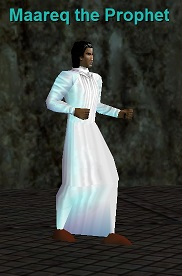
Maareq the Prophet fight info:
- Hits for 1700+
- Flurries
- Slowable
- Spawns adds during the fight that are trivial
Once Maareq the Prophet is dead Tylis Newleaf becomes targetable. Everyone should stand under his cage. The raid leader needs to stand on the stairs to get within line-of-sight of Tylis, then say “we are ready”. This will port everyone in the raid into a mini-dungeon.
The mini-dungeon is just a bunch of trash mobs with a weak boss at the end. Make sure nobody in the raid falls into the water/mud or additional adds will spawn. Work your way through the dungeon. Take the following path to get to the end quickest:
- Upon zoning in take the right staircase
- Take the next door on the right and go up the stairs
- Take the next door straight ahead.
At this point you’ll be at the second level so just take the small ramp across into the final room. At the end of this room in a small chamber you’ll find The Keeper of Sorrows. Kill him, he is trivial. Upon his death Tylis Newleaf will spawn. Everyone in the raid needs to hail Tylis Newleaf for their flag. At this point nobody should communicate with Tylis Newleaf at all other than a hail. Once everyone in the raid has hailed Tylis Newleaf for their flag, then ONE person in the raid say “ready to return” to him. This will port everyone back to the cage room.
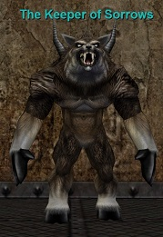
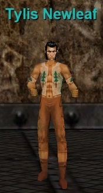
Quarm Script
Sourced from the Quarm server Lua script (potorment/The_Keeper_of_Sorrows.lua, SecretsOTheP/quests): On death, despawns Tylis Newleaf and respawns #Tylis_Newleaf at fixed coordinates.
| Level | 66 |
|---|---|
| HP | 100,000 |
| Hits | 179 - 973 |
| Resistances | MR 65 / CR 65 / FR 65 / DR 50 / PR 50 |
| Special Abilities | Summon, Enrage, Area Rampage, Dual Wield, Do Not Equip, Magical Attack, Unslowable, Unmezzable, Uncharmable, Unstunnable, Unfearable, Immune to fleeing, Immune to melee except magical, NO LOITERING |
Cross-referenced from pqdi.cc (Project Quarm Database Interface)
Sources: eqprogression.com guide pages — Aerin'Dar and the Crystalline Globe key quest (Plane of Valor), Bertoxxulous and Carprin Deatharn (Crypt of Decay), Saryrn and the Screaming Sphere key quest, and The Keeper of Sorrows event (Plane of Torment); raspersrealm.com (Plane of Time only); pqdi.cc for boss statistics. Videos embedded from YouTube.